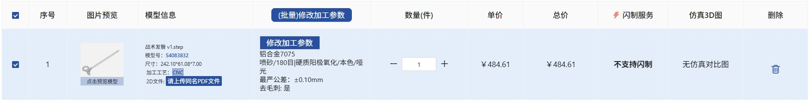
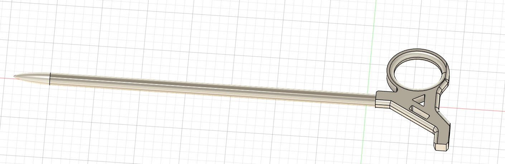

☯️🧬霊狐製作所 公式ツイッター
@Cheese_Ghostfox
居然不算很贵w
7075铝合金+精密喷砂+硬质阳极氧化居然才这个价格(((
可以说是闹钟最令人舒适的一面了(
(没看到TC4钛合金的报价,特殊材料需要人工报价)


☯️🧬霊狐製作所 公式ツイッター
@Cheese_Ghostfox
狐大概属于那种会被打出古风手工圈子的...簪娘(?
Feature:
a.钛合金一体CNC制造，表面图案采用光敏掩模阳极氧化，尖端附加选择性物理气相沉积TiCN涂层，确保耐磨度与强度
b.具有一个标准8mm内三角扳手，以及一个碳化钨破窗锥
c.附带装饰性对称3*11氚荧光管欠盈安装位
d.是一把美观，轻量化，舒适的发簪 https://t.co/mWnNv8dD9m